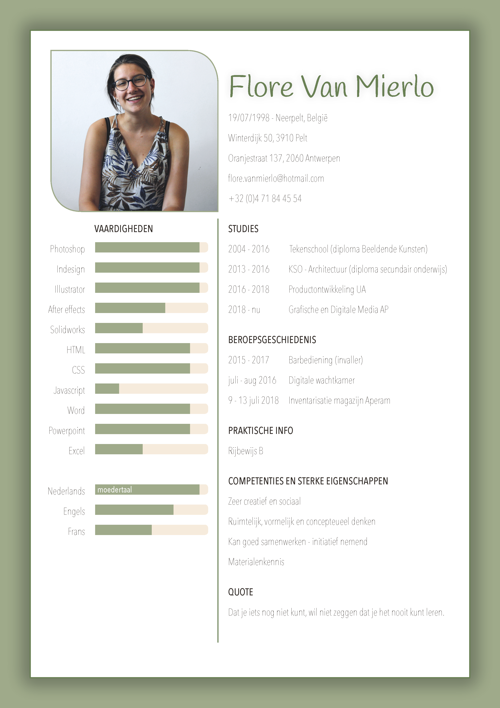

Flore
Van Mierlo
Ik ben Flore Van Mierlo en woon in Pelt. Op mijn 20 jarige leeftijd heb ik al veel geëxploreerd naar de richting waar ik echt naartoe wil gaan. Ik heb namelijk architectuur gestudeerd in het middelbaar in de kunstschool van Genk. Deze richting lag me niet helemaal door de strakke lijnen en vele regels. Toen ik afstudeerde heb ik dan gekozen voor Productontwikkeling in de Universiteit van Antwerpen. Deze richting lag me nauw aan het hartje en deed ik met veel vreugd. Doordat ik deze richting niet behaalde ben ik overgestapt naar een andere richting dat ik zeker zo graag doe : Grafische en Digitale Media in de hooge shool Artesis Plantijn te Antwerpen. Vandaag de dag ben ik bezig met het uiten van mijn creativiteit in op zoveel mogelijk verschillende manieren.
CurriculumVitae 